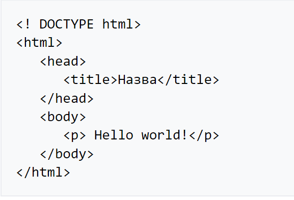

Вітаю на моїй першій веб-сторінці.
Тут я Вам розкажу коротко про HTML розмітку.
Зараз використовується HTML версії 5.2
HTML 5.2 складається із трьох частин:
- Декларація типу документа (англ. Document type declaration, Doctype), на початку документа, в якій визначається тип документа (DTD).
- Шапка документа (знаходиться в межах елемента head), в якій записано загальні технічні відомості або додаткова інформація про документ, яка не відтворюється безпосередньо в браузері.
- Тіло документа (може знаходитися в елементі body), в якому міститься основна інформація документа.
Нижче наведено приклад загальної структури HTML-документа:

Більше інформації ви зможете знайти натиснувши тут.